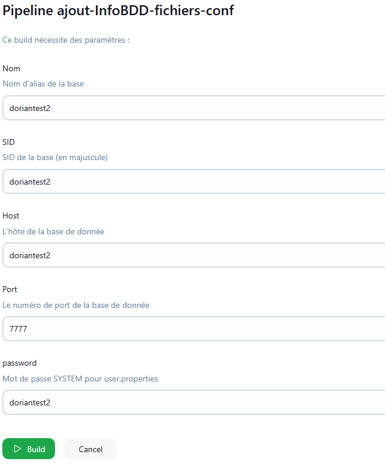
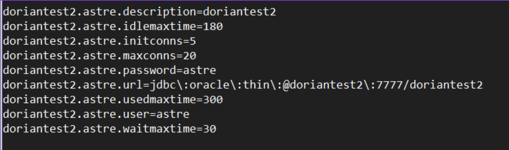

Cette mission consiste à la planification, installation et docuementation d'une copie de données d'une base de données de production vers une base de données de test.
Fonctionnalités principales
- Préparation et ordonnancement d’une réplication des données PROD → TEST
- Import dans la base de test et remise en service de l’environnement
- Vérification de la conformité, intégrité et disponibilité des données copiées
- Documentation complète du processus et amélioration continue de la procédure
Technologies utilisées
Linux
Oracle
Ticket
Windows Server
SQL
Captures d'écran

